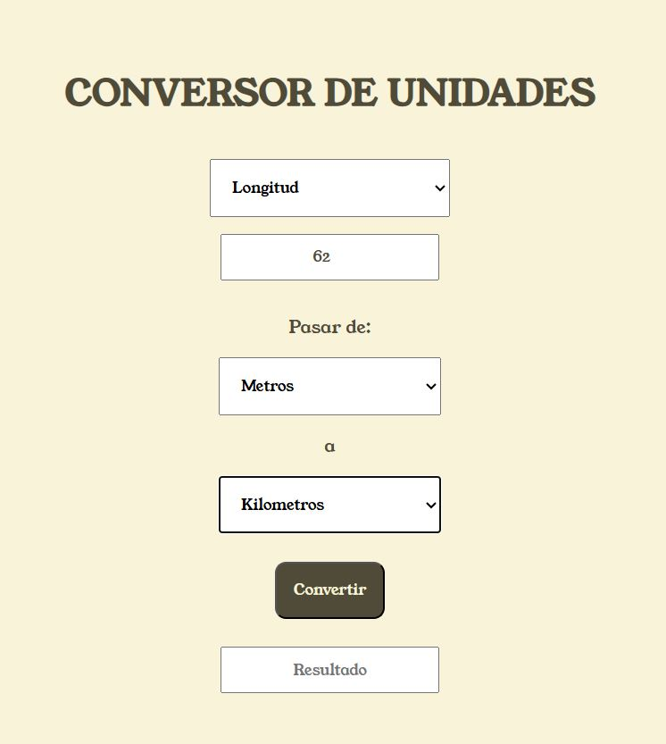
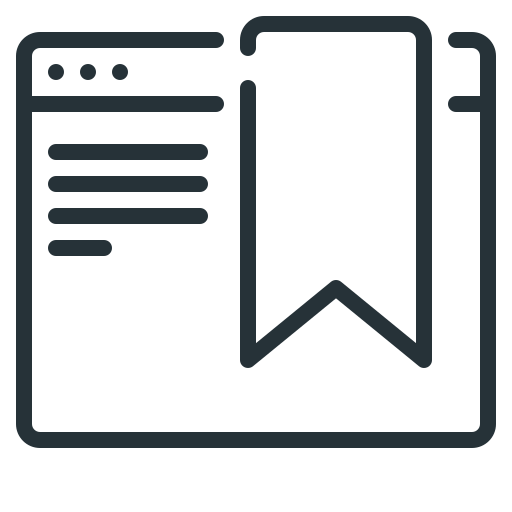

Aplicativo web para la conversión de unidades de longitud, peso y temperatura. El usuario puede intercambiar entre los distintos tipos de unidades y realizar las conversiones correspondientes.
Ir al repositorioCamilo Andres Uribe Santos
Portafolio personal
Soy un desarrollador en constante crecimiento, apasionado por aprender nuevas tecnologías y resolver problemas mediante código. Actualmente estoy adquiriendo experiencia con herramientas como Python, HTML, CSS, JavaScript y React, entre otras. Mi objetivo es mejorar mis habilidades y crear soluciones prácticas y funcionales para diversos desafíos.
Con cada proyecto, busco no solo perfeccionar mis conocimientos, sino también mantenerme al día con las mejores prácticas de desarrollo. Me interesa particularmente el desarrollo de aplicaciones web interactivas y mejorar la experiencia del usuario mediante tecnologías modernas como React.
Mis Proyectos:
-
Conversor de unidades
 -
Conversor de unidades
Aplicativo web para la conversión de unidades de longitud, peso y temperatura. El usuario puede intercambiar entre los distintos tipos de unidades y realizar las conversiones correspondientes.
Ir al repositorio
Mis Servicios
-
Desarrollo de sitios web

Creo sitios web responsivos y funcionales usando HTML, CSS, JavaScript y React. Me enfoco en ofrecer experiencias limpias e intuitivas para el usuario final.
-
Depuracion y optimizacion de codigo
Analizo y mejoro scripts existentes, limpiando el código, corrigiendo errores y optimizando su rendimiento para hacerlo más claro y eficiente.
-
Automatización de tareas con Python

Simplifico procesos repetitivos como el manejo de archivos Excel, generación de reportes y transformación de datos. Ideal para ahorrar tiempo y minimizar errores manuales.
-
Aplicaciones de escritorio
Desarrollo herramientas simples y portables con interfaces gráficas (Tkinter) para facilitar tareas internas dentro de una organización sin depender de software externo.